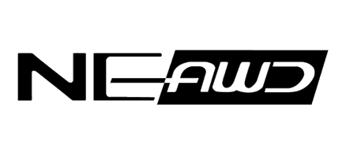

Logotype of New England All Wheel Drive (NEAWD) club, members of which located in the area of Southern New Hampshire and Northern Massachusetts.

NEAWD logo decal installation:
May 15, 2007
Logotype of New England All Wheel Drive (NEAWD) club, members of which located in the area of Southern New Hampshire and Northern Massachusetts.
